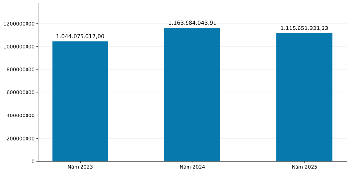
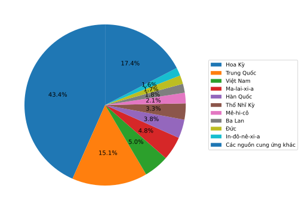
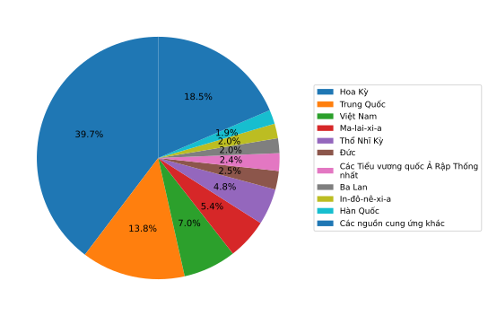
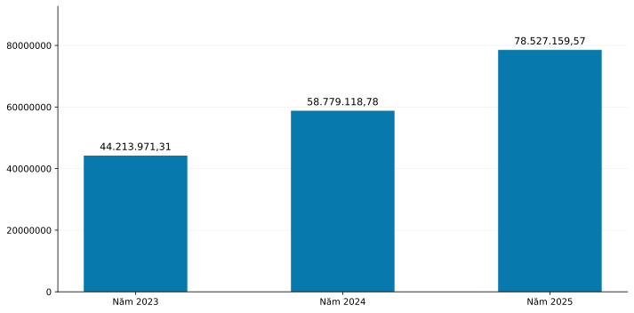
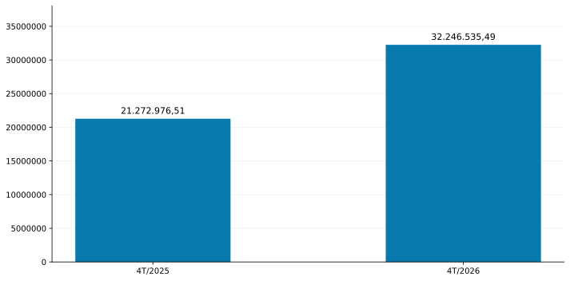

Thổ Nhĩ Kỳ khởi xướng điều tra chống bán phá giá đối với vải mành polyester dùng cho sản xuất lốp xe của Việt Nam
Theo thông tin Cục Phòng vệ thương mại (Bộ Công Thương) nhận được, ngày 16/6/2026, Bộ Thương mại Thổ Nhĩ Kỳ đã ban hành thông báo khởi xướng điều tra chống bán phá giá đối với sản phẩm vải mành polyester dùng cho sản xuất lốp xe có xuất xứ từ Việt Nam.
Sản phẩm bị điều tra là vải mành làm từ sợi polyester cường lực cao, đã tẩm cao su, dùng cho sản xuất các loại lốp xe, thuộc mã GTIP/HS Thổ Nhĩ Kỳ 5902.20.10.00.00 (mã HS chỉ mang tính tham khảo, phạm vi điều tra được xác định theo mô tả hàng hóa trong thông báo khởi xướng).
Vụ việc được tiến hành đồng thời đối với hàng hóa có xuất xứ từ Trung Quốc và Việt Nam. Đối với Việt Nam, phạm vi điều tra chỉ bao gồm sản phẩm vải mành polyester; trong khi sản phẩm vải mành nylon/polyamide của Trung Quốc cũng thuộc phạm vi điều tra của vụ việc.
Cuộc điều tra do Vụ Chống bán phá giá và Chống trợ cấp thuộc Tổng cục Nhập khẩu, Bộ Thương mại Thổ Nhĩ Kỳ thực hiện trên cơ sở đơn kiện của Công ty Kordsa Teknik Tekstil A.Ş. Giai đoạn điều tra bán phá giá được xác định từ 01/10/2024 đến 30/9/2025, còn giai đoạn xem xét thiệt hại từ 01/01/2022 đến 30/9/2025.
Theo thông báo khởi xướng, cơ quan điều tra cho rằng lượng nhập khẩu vải mành polyester từ Trung Quốc và Việt Nam tăng trong giai đoạn xem xét. Đối với hàng hóa của Việt Nam, cơ quan điều tra nhận định chưa có dấu hiệu làm giảm giá bán của ngành sản xuất trong nước nhưng có dấu hiệu gây sức ép về giá trong giai đoạn từ ngày 01/01/2023 đến ngày 30/9/2025. Đồng thời, phía Thổ Nhĩ Kỳ cho rằng ngành sản xuất trong nước có dấu hiệu suy giảm ở một số chỉ tiêu như sản lượng, doanh số, lợi nhuận, công suất, thị phần, năng suất và dòng tiền, qua đó quyết định khởi xướng điều tra để xem xét hành vi bán phá giá, thiệt hại và mối quan hệ nhân quả.
Thông báo cũng đề cập vấn đề nền kinh tế phi thị trường. Theo đó, doanh nghiệp Việt Nam có thể cung cấp thông tin để chứng minh hoạt động theo điều kiện kinh tế thị trường. Trường hợp không chứng minh được, cơ quan điều tra dự kiến sử dụng Thổ Nhĩ Kỳ làm nước thay thế để xác định giá trị thông thường.
Sau khi khởi xướng vụ việc, cơ quan điều tra đã gửi bản câu hỏi điều tra tới các doanh nghiệp sản xuất, xuất khẩu của Việt Nam. Thời hạn trả lời là 37 ngày kể từ ngày thông báo được gửi hoặc được đăng trên Công báo đối với các bên không nhận được thông báo trực tiếp. Các trao đổi với cơ quan điều tra phải được thực hiện bằng tiếng Thổ Nhĩ Kỳ. Trường hợp doanh nghiệp không hợp tác hoặc cung cấp thông tin không đầy đủ, cơ quan điều tra có thể sử dụng các dữ liệu sẵn có để đưa ra kết luận.
Trước diễn biến trên, Cục Phòng vệ thương mại khuyến nghị các hiệp hội ngành hàng và doanh nghiệp sản xuất, xuất khẩu liên quan chủ động rà soát hoạt động xuất khẩu trong giai đoạn điều tra, xác định khả năng thuộc phạm vi vụ việc, chuẩn bị đầy đủ hồ sơ, tài liệu liên quan và tích cực hợp tác với cơ quan điều tra thông qua việc đăng ký tham gia vụ việc, trả lời đầy đủ bản câu hỏi điều tra và các yêu cầu cung cấp thông tin theo đúng thời hạn. Đồng thời, doanh nghiệp cần phối hợp chặt chẽ với Cục Phòng vệ thương mại trong suốt quá trình xử lý vụ việc để được hỗ trợ, bảo vệ quyền và lợi ích hợp pháp.
TIN TRONG NƯỚC
Ấn Độ ban hành kết luận cuối cùng vụ việc điều tra chống trợ cấp đối với chất độn nhựa nhập khẩu từ Việt Nam
Theo thông tin Cục Phòng vệ thương mại (Bộ Công Thương) nhận được, ngày 26/6/2026, Tổng vụ Phòng vệ thương mại Ấn Độ (DGTR) đã ban hành Kết luận cuối cùng trong vụ việc điều tra chống trợ cấp đối với sản phẩm chất độn nhựa (Calcium Carbonate Filler Masterbatch) có xuất xứ hoặc xuất khẩu từ Việt Nam.
Sản phẩm bị điều tra là chất độn nhựa (Calcium Carbonate Filler Masterbatch), được phân loại theo mã HS 3824.99.00 (mã HS chỉ mang tính tham khảo, phạm vi sản phẩm được xác định theo mô tả trong thông báo khởi xướng). Vụ việc được khởi xướng trên cơ sở đơn kiện của Hiệp hội các nhà sản xuất Hợp chất và Masterbatch Ấn Độ. Thời kỳ điều tra trợ cấp từ ngày 01/4/2023 đến 30/6/2024, trong khi giai đoạn xem xét thiệt hại từ 01/4/2020 đến 30/6/2024.
Theo Kết luận cuối cùng, DGTR đã xem xét 13 chương trình hỗ trợ của Việt Nam và xác định 09 chương trình là trợ cấp có thể đối kháng và được các doanh nghiệp Việt Nam hưởng trong thời kỳ điều tra. Các chương trình này chủ yếu liên quan đến ưu đãi thuế thu nhập doanh nghiệp, miễn giảm tiền thuê đất, cung cấp đá vôi với giá thấp hơn giá trị thông thường và các chương trình cho vay ưu đãi, tín dụng xuất khẩu.
Bên cạnh đó, DGTR xác định một số chương trình như miễn thuế nhập khẩu nguyên liệu, máy móc phục vụ sản xuất hàng xuất khẩu, chương trình xúc tiến xuất khẩu và chương trình phát triển ngành nhựa không được các doanh nghiệp Việt Nam hưởng trong giai đoạn điều tra. Đối với chương trình cung cấp khí, điện và than với giá thấp hơn giá thông thường, cơ quan điều tra không đưa ra kết luận về tính đối kháng.
Trên cơ sở kết quả điều tra, DGTR kiến nghị Bộ Tài chính Ấn Độ áp dụng thuế chống trợ cấp đối với sản phẩm chất độn nhựa của Việt Nam. Mức thuế đối với các doanh nghiệp hợp tác đầy đủ trong quá trình điều tra dao động từ 9,11 USD/tấn đến 22,52 USD/tấn, trong khi các doanh nghiệp không tham gia hoặc không hợp tác đầy đủ sẽ chịu mức thuế 69,19 USD/tấn. Ngoài mức thuế tính theo USD/tấn, DGTR cũng xác định mức thuế theo tỷ lệ phần trăm riêng đối với từng doanh nghiệp và đã thông báo trực tiếp cho các công ty liên quan.
Để được áp dụng mức thuế riêng, nhà xuất khẩu phải xuất trình hóa đơn thương mại hợp lệ kèm theo xác nhận của nhà sản xuất theo mẫu do DGTR quy định. Trường hợp không đáp ứng yêu cầu này, hàng hóa sẽ bị áp dụng mức thuế dành cho các doanh nghiệp khác là 69,19 USD/tấn.
Theo quy định của Ấn Độ, Bộ Tài chính nước này sẽ xem xét kiến nghị của DGTR trước khi ban hành quyết định cuối cùng về việc áp dụng thuế chống trợ cấp. Nếu được thông qua, biện pháp sẽ có hiệu lực trong 05 năm kể từ ngày thông báo áp thuế được ban hành. Các bên liên quan có quyền kháng nghị Kết luận cuối cùng của DGTR lên Tòa Phúc thẩm Thuế quan, Thuế tiêu thụ đặc biệt và Thuế dịch vụ (CESTAT).
Trước diễn biến trên, Cục Phòng vệ thương mại khuyến nghị các doanh nghiệp sản xuất, xuất khẩu chất độn nhựa sang thị trường Ấn Độ nghiên cứu kỹ Kết luận cuối cùng để chuẩn bị phương án xử lý phù hợp, trong đó có việc xem xét quyền kháng nghị nếu cần thiết. Đồng thời, doanh nghiệp cần chủ động điều chỉnh hoạt động sản xuất, đa dạng hóa thị trường và sản phẩm xuất khẩu nhằm giảm thiểu tác động của các biện pháp phòng vệ thương mại, cũng như nghiên cứu quy định của Ấn Độ về rà soát giữa kỳ và rà soát cuối kỳ để có kế hoạch đề nghị điều chỉnh mức thuế trong thời gian tới.
TIN NƯỚC NGOÀI
EU công bố cơ chế hạn ngạch thuế quan mới đối với thép nhập khẩu nhằm bảo vệ ngành thép trước tình trạng dư thừa công suất toàn cầu
Ngày 30/6/2026, Ủy ban châu Âu (EC) đã công bố quy định mới về cơ chế phân bổ hạn ngạch thuế quan đối với thép nhập khẩu nhằm tăng cường bảo vệ ngành thép của Liên minh châu Âu (EU) trước tình trạng dư thừa công suất toàn cầu, đồng thời nâng tỷ lệ sử dụng công suất của ngành thép nội khối lên khoảng 80%.
Theo quy định mới, tổng hạn ngạch thuế quan (TRQ) được hưởng mức thuế trong hạn ngạch sẽ giảm 47%, xuống còn 18,3 triệu tấn mỗi năm. Đối với lượng thép nhập khẩu vượt hạn ngạch, EU sẽ áp dụng mức thuế nhập khẩu 50% đối với 26 nhóm sản phẩm thép thuộc phạm vi điều chỉnh. Quy định sẽ chính thức có hiệu lực từ ngày 01/7/2026.
Theo EC cho biết, 50% tổng hạn ngạch thuế quan sẽ được phân bổ riêng cho các đối tác đã ký hiệp định thương mại tự do (FTA) với EU, trong khi 50% còn lại được phân bổ theo cơ chế toàn cầu và áo dụng đối với tất cả các đối tác thương mại, bao gồm cả các quốc gia có FTA với EU. Đối với một số đối tác FTA, hạn ngạch sẽ được phân bổ theo từng quốc gia trên cơ sở kim ngạch xuất khẩu thép trong giai đoạn 2022–2024, qua đó giúp các đối tác trên chịu mức cắt giảm hạn ngạch thấp hơn mức cắt giảm bình quân 47%.
Hiệp hội Thép châu Âu (EUROFER) đánh giá các biện pháp mới có thể góp phần nâng tỷ lệ sử dụng công suất của ngành thép EU từ khoảng 67% hiện nay lên mức 73–75%, đồng thời giúp khôi phục khoảng 15 triệu tấn công suất sản xuất. Tuy nhiên, EUROFER cho rằng để đạt mục tiêu nâng tỷ lệ sử dụng công suất lên 80% như kỳ vọng của EC, EU cần tiếp tục mở rộng các biện pháp bảo vệ đối với các sản phẩm thép chế biến hạ nguồn.
Bên cạnh việc điều chỉnh cơ chế hạn ngạch thuế quan, quy định mới cũng bổ sung yêu cầu về truy xuất nguồn gốc theo tiêu chí "nấu chảy và đúc". Theo đó, cơ quan có thẩm quyền sẽ xác định quốc gia nơi thép được nấu chảy và đúc lần đầu, qua đó tăng cường khả năng xác minh xuất xứ của sản phẩm. Quy định này nhằm nâng cao tính minh bạch, đồng thời ngăn chặn hành vi lẩn tránh các biện pháp phòng vệ thương mại thông qua hoạt động chuyển tải hoặc gia công tại nước thứ ba.
Theo EC, việc điều chỉnh cơ chế hạn ngạch thuế quan là cần thiết trong bối cảnh tình trạng dư thừa công suất thép toàn cầu vẫn tiếp diễn và các hành vi cạnh tranh không công bằng, đặc biệt là bán phá giá, tiếp tục gây áp lực đối với ngành thép của EU. EC cho rằng các biện pháp mới sẽ góp phần tăng cường bảo vệ ngành sản xuất trong nước, duy trì môi trường cạnh tranh công bằng và nâng cao năng lực cạnh tranh của ngành thép EU trong dài hạn.
Tổng hợp từ reuters.com
TIN NƯỚC NGOÀI
Úc áp dụng biện pháp chống bán phá giá tạm thời đối với một số sản phẩm thép cán phẳng nhập khẩu từ Trung Quốc và Hàn Quốc
Ủy ban Chống bán phá giá Úc (ADC) vừa ban hành kết luận sơ bộ, xác định có căn cứ áp dụng biện pháp chống bán phá giá tạm thời đối với một số sản phẩm thép cán phẳng nhập khẩu từ Trung Quốc và Hàn Quốc. Đồng thời, ADC cũng quyết định áp dụng biện pháp chống trợ cấp tạm thời đối với các sản phẩm có xuất xứ từ Trung Quốc các biện pháp tạm thời được áp dụng dưới hình thức khoản tiền ký quỹ đối với hàng hóa nhập khẩu thuộc phạm vi điều tra. Sản phẩm bị điều tra được phân loại theo các mã HS 7208.40.00.39, 7208.51.00.40, 7208.52.00.41, 7208.90.00.30, 7225.40.00.22 và 7225.40.00.24.
Đối với hàng hóa có xuất cứ từ Trung Quốc, ADC xác định mức thuế chống bán phá giá tạm thời từ 9,4% đến 51,2%, và mức thuế chống trợ cấp tạm thời từ 0% đến 4,5% tùy theo từng nhà sản xuất, xuất khẩu. Đối với hàng hóa có xuất xứ từ Hàn Quốc, ADC áp dụng mức thuế chống bán phá giá tạm thời thống nhất là 21,6% đối với các nhà sản xuất và xuất khẩu thuộc phạm vi điều tra.
Theo ADC, vụ việc được khởi xướng vào tháng 10/2025 trên cơ sở đơn yêu cầu của Công ty BlueScope Steel, dại diện cho ngành sản xuất thép trong nước. Giai đoạn điều tra hành vi bán phá giá và trợ cấp được xác định từ ngày 01/7/2024 đến ngày 30/6/2025.
Kết luận sơ bộ của ADC cho thấy có đủ căn cứ để xác định một số sản phẩm thép cán phẳng nhập khẩu từ Trung Quốc và Hàn Quốc có hành vi bán phá giá tại thị trường Úc. Đồng thời, hàng hóa có xuất xứ từ Trung Quốc cũng được xác định đã nhận các khoản trợ cấp có thể bị áp dụng thuế chống trợ cấp theo quy định. Trên cơ sở đó, cơ quan điều tra quyết định áp dụng các biện pháp tạm thời nhằm ngăn ngừa thiệt hại tiếp tục xảy ra đối với ngành sản xuất thép trong nước trong thời gian hoàn tất quá trình điều tra.
Theo kế hoạch, ADC sẽ hoàn tất báo cáo cuối cùng và trình Bộ trưởng phụ trách xem xét trước ngày 07/8/2026. Trên cơ sở kết luận cuối cùng, Chính phủ Úc sẽ quyết định việc áp dụng hoặc không áp dụng các biện pháp chống bán phá giá và chống trợ cấp chính thức đối với các sản phẩm thuộc phạm vi điều tra.
Tổng hợp từ gmk.center
TIN NƯỚC NGOÀI
Vương quốc Anh khởi xướng điều tra chống bán phá giá đối với hạt nhựa LLDPE nhập khẩu từ Hoa Kỳ
Cơ quan Phòng vệ thương mại Vương quốc Anh (Trade Remedies Authority - TRA) đã khởi xướng điều tra chống bán phá giá đối với sản phẩm hạt nhựa Polyethylene mạch thẳng tỷ trọng thấp (Linear Low-Density Polyethylene - LLDPE) nhập khẩu từ Hoa Kỳ, trên cơ sở đơn kiện của Công ty Ineos Olefins & Polymers UK – nhà sản xuất duy nhất sản xuất sản phẩm này tại Vương quốc Anh.
Cuộc điều tra được khởi xướng từ ngày 01/7 nhằm xem xét cáo buộc của Công ty Ineos cho rằng sản phẩm LLDPE có xuất xứ từ Hoa Kỳ được bán vào thị trường Vương quốc Anh với giá bán phá giá, gây thiệt hại cho ngành sản xuất trong nước. Theo doanh nghiệp này, giá xuất khẩu của Hoa Kỳ thấp hơn giá trị thông thường, khiến lượng hàng nhập khẩu gia tăng, làm giảm doanh số bán hàng, thu hẹp thị phần, gây áp lực giảm giá, làm suy giảm lợi nhuận, ảnh hưởng đến hoạt động đầu tư và việc làm trong nước.
Thời kỳ điều tra xác định bán phá giá là từ ngày 01/01/2025 đến ngày 31/12/2025, trong khi thời kỳ điều tra thiệt hại kéo dài từ ngày 01/01/2022 đến ngày 31/12/2025.
Theo số liệu của Global Trade Tracker, trong năm 2025, Vương quốc Anh đã nhập khẩu khoảng 102.400 tấn LLDPE từ Hoa Kỳ, thuộc các mã HS 39011010 và 390140, tăng so với mức 81.100 tấn năm 2024 và 50.000 tấn năm 2023.
LLDPE là loại hạt nhựa được sử dụng phổ biến trong sản xuất màng bao bì và nhiều ứng dụng nhựa mềm khác.
Các bên liên quan có thời hạn đến ngày 16/7/2026 để đăng ký tham gia vụ việc. TRA dự kiến ban hành bản câu hỏi điều tra vào ngày 24/7, với thời hạn trả lời đến ngày 24/8. Hoạt động thẩm tra tại chỗ dự kiến được thực hiện trong tháng 9 và tháng 10/2026.
TRA cho biết có thể đề xuất áp dụng biện pháp chống bán phá giá tạm thời trong giai đoạn từ tháng 10 đến tháng 12/2026 nếu thu thập được đầy đủ bằng chứng về hành vi bán phá giá và thiệt hại của ngành sản xuất trong nước. Trong trường hợp đó, các nhà nhập khẩu có thể phải thực hiện nghĩa vụ bảo lãnh đối với khoản thuế chống bán phá giá có thể được áp dụng.
Theo kế hoạch, TRA sẽ công bố kết luận sơ bộ vào tháng 02/2027 và trình kiến nghị cuối cùng lên Bộ trưởng Bộ Kinh doanh và Thương mại Vương quốc Anh vào tháng 6/2027.
Tổng hợp từ argusmedia.com
TIN NƯỚC NGOÀI
Hoa Kỳ duy trì lệnh áp thuế chống bán phá giá đối với cà chua tươi nhập khẩu từ Mê-hi-cô
Ủy ban Thương mại Quốc tế Hoa Kỳ (USITC) đã quyết định duy trì lệnh áp thuế chống bán phá giá đối với sản phẩm cà chua tươi nhập khẩu từ Mê-hi-cô sau khi kết luận không có đủ cơ sở để đình chỉ biện pháp này.
Quyết định trên được các hiệp hội trồng cà chua của Hoa Kỳ, đứng đầu là Hiệp hội Cà chua Florida (Florida Tomato Exchange - FTE) hoan nghênh. Các hiệp hội này từ lâu đã vận động nhằm ngăn chặn tình trạng cà chua Mê-hi-cô được cho là bán phá giá với giá thấp vào thị trường Hoa Kỳ.
Trước đây, theo Thỏa thuận đình chỉ đối với mặt hàng cà chua, được ký kết từ giữa những năm 1990 và nhiều lần sửa đổi sau đó, các nhà xuất khẩu Mê-hi-cô được phép xuất khẩu cà chua vào thị trường Hoa Kỳ nếu đáp ứng một số điều kiện, trong đó có việc tuân thủ mức giá tham chiếu tối thiểu.
Tuy nhiên, đến tháng 7/2025, Chính phủ Hoa Kỳ đã chấm dứt thỏa thuận này và khôi phục việc áp dụng thuế chống bán phá giá đối với cà chua tươi nhập khẩu từ Mê-hi-cô.
Ông Robert Guenther, Phó Chủ tịch điều hành của FTE, cho biết quyết định của USITC là "một chiến thắng cho cạnh tranh công bằng và nguyên tắc thượng tôn pháp luật". Theo ông, các nhà trồng cà chua Hoa Kỳ đã chờ đợi gần ba thập kỷ để được bảo vệ trước tình trạng cà chua Mê-hi-cô bị cho là bán phá giá theo quy định của pháp luật thương mại Hoa Kỳ. Ông cũng cho rằng quyết định này khẳng định những nỗ lực của ngành sản xuất trong nước đang đi đúng hướng.
Theo ước tính, các thành viên của FTE hiện chiếm khoảng 50% tổng sản lượng cà chua tươi được sản xuất tại Hoa Kỳ.
Tổng hợp từ fruitnet.com
TIN NƯỚC NGOÀI
Ấn Độ khởi xướng điều tra chống bán phá giá đối với thép cán nóng nhập khẩu từ Nga, Trung Quốc và Nhật Bản
Tổng cục Phòng vệ thương mại (Directorate General of Trade Remedies - DGTR) thuộc Bộ Thương mại và Công nghiệp Ấn Độ đã khởi xướng điều tra chống bán phá giá đối với sản phẩm thép cán nóng nhập khẩu từ Nga, Trung Quốc và Nhật Bản.
Cuộc điều tra được tiến hành trên cơ sở đơn đề nghị của các nhà sản xuất thép trong nước gồm JSW Steel, JSW Vijaynagar Metallics Limited và Jindal Steel Odisha. Theo các doanh nghiệp này, thép cán nóng nhập khẩu từ Trung Quốc, Nga và Nhật Bản đang được bán vào thị trường Ấn Độ với giá bán phá giá, gây thiệt hại đáng kể cho ngành sản xuất trong nước và có khả năng tiếp tục gây thiệt hại trong thời gian tới.
Sản phẩm thuộc phạm vi điều tra là thép dẹt cán nóng bằng thép hợp kim hoặc thép không hợp kim, có chiều dày không quá 25 mm.
Theo Reuters, lượng thép thành phẩm Trung Quốc xuất khẩu sang Ấn Độ trong tháng 4/2026 đã tăng hơn gấp đôi, đạt 232.000 tấn - mức cao nhất trong ít nhất hai năm trở lại đây. Thép cán nóng của Trung Quốc đang được chào bán với giá thấp hơn từ 11 đến 37 USD/tấn so với giá của các sản phẩm cùng loại sản xuất tại Ấn Độ, qua đó thu hút các nhà nhập khẩu.
Trước đó, truyền thông cũng đưa tin hai doanh nghiệp thép nhà nước của Ấn Độ là SAIL và NMDC Ltd. đang xem xét khả năng mua lại các mỏ than luyện cốc tại Nga nhằm bảo đảm nguồn cung nguyên liệu đầu vào phục vụ sản xuất thép.
Tổng hợp từ NV Business
TIN NƯỚC NGOÀI
Trung Quốc áp thuế chống bán phá giá 73,5% đối với tinh bột đậu Hà Lan nhập khẩu từ Ca-na-đa
Bộ Thương mại Trung Quốc đã quyết định áp dụng thuế chống bán phá giá ở mức 73,5% đối với sản phẩm tinh bột đậu Hà Lan nhập khẩu từ Ca-na-đa, có hiệu lực từ ngày 01/7/2026.
Theo Bộ Thương mại Trung Quốc, quyết định trên được đưa ra sau cuộc điều tra chống bán phá giá được khởi xướng từ tháng 8/2025. Kết quả điều tra cho thấy các sản phẩm tinh bột đậu Hà Lan của Ca-na-đa đã được bán phá giá vào thị trường Trung Quốc.
Tinh bột đậu Hà Lan là nguyên liệu được sử dụng phổ biến làm chất tạo đặc và chất ổn định trong ngành thực phẩm, thức ăn chăn nuôi và dược phẩm.
Quan hệ thương mại giữa Ca-na-đa và Trung Quốc đã có dấu hiệu cải thiện sau chuyến thăm Trung Quốc của Thủ tướng Ca-na-đa Mark Carney vào tháng 1/2026. Trong chuyến thăm này, hai bên đã đạt được thỏa thuận về quan hệ đối tác chiến lược nhằm giải quyết các vướng mắc trong thương mại. Phía Trung Quốc đánh giá cuộc gặp giữa Thủ tướng Mark Carney và Chủ tịch Trung Quốc Tập Cận Bình là "bước ngoặt" trong quan hệ song phương sau nhiều năm căng thẳng.
Theo thỏa thuận, để đổi lấy việc Trung Quốc giảm thuế đối với hạt cải dầu, khô cải dầu, hải sản và đậu Hà Lan của Ca-na-đa, Chính phủ Canada đồng ý cho phép nhập khẩu tối đa 49.000 xe điện của Trung Quốc với mức thuế ưu đãi.
Trước đó, vào năm 2024, Ca-na-đa đã áp thuế 100% đối với xe điện, pin, tấm pin năng lượng mặt trời và khoáng sản quan trọng nhập khẩu từ Trung Quốc. Đáp lại, Trung Quốc áp thuế 100% đối với các sản phẩm cải dầu và đậu Hà Lan của Ca-na-đa, đồng thời áp thuế 25% đối với tôm hùm, cua và thịt lợn của nước này.
Bên cạnh đó, Ca-na-đa vẫn bày tỏ lo ngại về tình trạng thép Trung Quốc bị cho là bán phá giá trong bối cảnh Hoa Kỳ tăng cường áp thuế đối với các sản phẩm thép nhập khẩu. Tháng 4/2026, Cơ quan Dịch vụ Biên giới Ca-na-đa (CBSA) đã khởi xướng điều tra chống bán phá giá đối với sản phẩm giá kệ thép nhập khẩu từ Trung Quốc trên cơ sở đơn kiện của một nhóm doanh nghiệp sản xuất trong nước. Cơ quan này dự kiến ban hành kết luận sơ bộ trước ngày 20/7/2026.
Sau chuyến thăm Trung Quốc vào cuối tháng 1/2026, Thủ tướng Mark Carney từng cho biết các nhà xuất khẩu thịt lợn của Ca-na-đa sẽ sớm được hưởng lợi từ việc Trung Quốc nới lỏng các biện pháp thuế quan. Tuy nhiên, đến nay, các mức thuế của Trung Quốc đối với thịt lợn và thuế 100% đối với hạt cải dầu của Ca-na-đa vẫn đang được duy trì.
Theo định hướng của Chính phủ Ca-na-đa, nước này đặt mục tiêu tăng 50% kim ngạch xuất khẩu sang Trung Quốc vào năm 2030, đồng thời hướng tới mục tiêu tăng gấp đôi kim ngạch xuất khẩu sang các thị trường ngoài Hoa Kỳ trong cùng giai đoạn.
Tổng hợp từ Yahoo!finance
THÔNG TIN XUẤT NHẬP KHẨU
Tình hình xuất khẩu mặt hàng nhôm thanh định hình vào thị trường Ca-na-đa
Mô tả mặt hàng nhôm thanh định hình
Nhôm thanh định hình là sản phẩm kim loại được chế tạo từ hợp kim nhôm thông qua quá trình ép đùn (Aluminum extrusion), tạo thành các thanh có tiết diện ngang với hình dạng, kích thước và đặc tính kỹ thuật theo yêu cầu sử dụng. Đây là một trong những sản phẩm nhôm có giá trị gia tăng cao, được ứng dụng rộng rãi trong nhiều lĩnh vực như xây dựng, công nghiệp, giao thông vận tải, năng lượng tái tạo, điện – điện tử, cơ khí chế tạo, nội thất và trang trí. Tùy theo mục đích sử dụng, nhôm thanh định hình có thể được thiết kế với nhiều dạng tiết diện khác nhau như hình chữ U, chữ H, chữ T, chữ L, hình hộp, hình tròn, hình vuông hoặc các tiết diện phức tạp được thiết kế riêng theo yêu cầu của khách hàng. Đặc điểm nổi bật của nhôm thanh định hình là có trọng lượng nhẹ, chỉ bằng khoảng một phần ba thép nhưng vẫn bảo đảm độ bền cơ học cao, khả năng chịu tải tốt, dễ gia công, lắp ráp và vận chuyển, góp phần giảm trọng lượng tổng thể của công trình hoặc sản phẩm sử dụng.
Nguyên liệu chính để sản xuất nhôm thanh định hình là phôi nhôm hợp kim (aluminum billet), được chế tạo từ nhôm nguyên sinh hoặc nhôm tái chế kết hợp với các nguyên tố hợp kim như magie (Mg), silic (Si), mangan (Mn), đồng (Cu), kẽm (Zn), crom (Cr) hoặc titan (Ti) nhằm cải thiện các tính chất cơ học và khả năng chống ăn mòn của sản phẩm. Trong thực tế, các mác hợp kim thuộc nhóm 6000, đặc biệt là hợp kim 6063 và 6061, được sử dụng phổ biến nhất do có khả năng ép đùn tốt, độ bền cao, khả năng hàn và gia công thuận lợi, đồng thời có bề mặt đẹp sau khi xử lý hoàn thiện. Sau quá trình ép đùn, sản phẩm thường được xử lý nhiệt theo các trạng thái như T5 hoặc T6 để nâng cao độ cứng, độ bền kéo và khả năng chịu lực, đáp ứng các yêu cầu kỹ thuật của từng lĩnh vực sử dụng.
Bên cạnh đặc tính cơ học vượt trội, nhôm thanh định hình còn có khả năng chống ăn mòn rất tốt nhờ trên bề mặt tự hình thành một lớp màng ôxít nhôm (Al₂O₃) mỏng nhưng bền vững, giúp bảo vệ vật liệu trước tác động của môi trường, đặc biệt trong điều kiện khí hậu nóng ẩm hoặc khu vực ven biển có hàm lượng muối cao. Để tăng độ bền và tính thẩm mỹ, sản phẩm thường được xử lý bề mặt bằng các phương pháp như anot hóa (anodizing), sơn tĩnh điện (powder coating), sơn PVDF hoặc phủ vân gỗ. Các phương pháp xử lý này không chỉ giúp nâng cao khả năng chống oxy hóa, chống tia cực tím và chống trầy xước mà còn tạo ra nhiều màu sắc, hoa văn khác nhau, đáp ứng yêu cầu đa dạng của thị trường xây dựng và trang trí nội ngoại thất.
Trong lĩnh vực xây dựng, nhôm thanh định hình được sử dụng chủ yếu để sản xuất hệ cửa đi, cửa sổ, vách kính, mặt dựng (curtain wall), lan can, mái che, kết cấu khung nhà lắp ghép và các hạng mục trang trí kiến trúc. Đối với ngành công nghiệp, sản phẩm được ứng dụng trong chế tạo khung máy, dây chuyền sản xuất tự động, thiết bị cơ khí, giá đỡ, băng tải, robot công nghiệp và các kết cấu yêu cầu trọng lượng nhẹ nhưng có độ cứng cao. Trong lĩnh vực giao thông vận tải, nhôm thanh định hình được sử dụng để sản xuất linh kiện ô tô, toa tàu, tàu thủy, xe buýt, xe điện và nhiều phương tiện khác nhằm giảm trọng lượng, tiết kiệm nhiên liệu và giảm phát thải khí nhà kính. Ngoài ra, cùng với sự phát triển của ngành năng lượng tái tạo, nhu cầu sử dụng nhôm thanh định hình trong sản xuất khung giá đỡ tấm pin điện mặt trời, kết cấu tua-bin điện gió và các thiết bị lưu trữ năng lượng cũng tăng nhanh trong những năm gần đây.
Về tiêu chuẩn kỹ thuật, nhôm thanh định hình phải đáp ứng nhiều yêu cầu nghiêm ngặt về thành phần hóa học, kích thước hình học, độ chính xác của tiết diện, độ thẳng, độ cứng, khả năng chịu tải và chất lượng bề mặt. Các tiêu chuẩn quốc tế được áp dụng phổ biến bao gồm ASTM (Hoa Kỳ), EN (Liên minh châu Âu), JIS (Nhật Bản) và ISO, trong khi nhiều thị trường nhập khẩu còn yêu cầu sản phẩm đáp ứng các tiêu chuẩn về quản lý chất lượng, truy xuất nguồn gốc, hàm lượng tái chế, phát thải carbon và các quy định liên quan đến môi trường như REACH hoặc RoHS. Đối với các sản phẩm sử dụng trong công trình xây dựng, yêu cầu về khả năng chịu lực, chống cháy, độ bền thời tiết và tuổi thọ sử dụng cũng ngày càng được siết chặt nhằm bảo đảm an toàn và tính bền vững của công trình.
Hiện nay, nhôm thanh định hình là một trong những mặt hàng có tốc độ tăng trưởng thương mại cao trên thế giới nhờ xu hướng sử dụng vật liệu nhẹ, tiết kiệm năng lượng và thân thiện với môi trường. Với khả năng tái chế gần như hoàn toàn mà không làm suy giảm chất lượng vật liệu, nhôm được xem là kim loại đóng vai trò quan trọng trong quá trình chuyển đổi sang nền kinh tế tuần hoàn và phát triển xanh. Nhu cầu tiêu thụ nhôm thanh định hình tiếp tục gia tăng tại các thị trường lớn như Hoa Kỳ, Liên minh châu Âu, Canada, Nhật Bản, Hàn Quốc và Australia, đặc biệt trong các ngành xây dựng xanh, phương tiện giao thông sử dụng năng lượng sạch và năng lượng tái tạo. Đây cũng là mặt hàng xuất khẩu có tiềm năng của Việt Nam, khi nhiều doanh nghiệp trong nước đã đầu tư dây chuyền ép đùn, xử lý bề mặt và gia công hiện đại, đáp ứng yêu cầu kỹ thuật của các thị trường quốc tế. Tuy nhiên, do kim ngạch xuất khẩu tăng nhanh và tính cạnh tranh cao, nhôm thanh định hình cũng là mặt hàng thường xuyên chịu sự giám sát và điều tra các biện pháp phòng vệ thương mại như chống bán phá giá, chống trợ cấp và chống lẩn tránh biện pháp phòng vệ thương mại tại nhiều quốc gia nhập khẩu. Vì vậy, việc nâng cao chất lượng sản phẩm, đáp ứng các tiêu chuẩn kỹ thuật, bảo đảm minh bạch về xuất xứ và chuỗi cung ứng, đồng thời tuân thủ các quy định thương mại quốc tế là những yếu tố quan trọng để duy trì và mở rộng thị trường xuất khẩu đối với mặt hàng này.
Quy trình sản xuất nhôm thanh định hình
Quy trình sản xuất nhôm thanh định hình là một chuỗi công đoạn công nghệ khép kín, đòi hỏi mức độ tự động hóa và độ chính xác cao nhằm tạo ra các sản phẩm có kích thước, hình dạng và tính chất cơ học đáp ứng yêu cầu kỹ thuật của từng lĩnh vực sử dụng. Nguyên liệu đầu vào chủ yếu là phôi nhôm hợp kim (aluminum billet), được sản xuất từ nhôm nguyên sinh hoặc nhôm tái chế kết hợp với các nguyên tố hợp kim như magie (Mg), silic (Si), mangan (Mn), đồng (Cu) hoặc kẽm (Zn) để cải thiện độ bền, độ cứng và khả năng chống ăn mòn. Các hợp kim thuộc nhóm 6000, đặc biệt là 6063 và 6061, được sử dụng phổ biến nhất do có tính ép đùn tốt, dễ gia công và phù hợp với nhiều ứng dụng trong xây dựng và công nghiệp.
Quy trình sản xuất bắt đầu bằng công đoạn chuẩn bị và gia nhiệt phôi nhôm. Phôi nhôm hình trụ được cắt theo chiều dài phù hợp với công suất của máy ép, sau đó được nung nóng trong lò gia nhiệt ở nhiệt độ khoảng 430–500°C để đạt trạng thái dẻo cần thiết trước khi ép đùn. Việc kiểm soát chính xác nhiệt độ của phôi là yếu tố quan trọng nhằm bảo đảm kim loại có khả năng chảy đồng đều, hạn chế hiện tượng nứt bề mặt, biến dạng hoặc phát sinh khuyết tật trong quá trình tạo hình.
Sau khi được gia nhiệt, phôi nhôm được đưa vào máy ép đùn thủy lực có công suất từ vài trăm đến hàng nghìn tấn. Dưới tác dụng của lực ép rất lớn, phôi nhôm được đẩy qua khuôn ép (die) có tiết diện được thiết kế theo hình dạng sản phẩm mong muốn. Đây là công đoạn quan trọng nhất trong toàn bộ quy trình sản xuất, quyết định trực tiếp đến kích thước, hình dạng, độ chính xác và chất lượng của nhôm thanh định hình. Tùy theo yêu cầu của khách hàng, khuôn ép có thể tạo ra các tiết diện đơn giản như hình chữ U, chữ H, chữ T, hình vuông, hình tròn hoặc các tiết diện kỹ thuật phức tạp phục vụ ngành xây dựng, cơ khí, điện tử và ô tô. Sau khi đi qua khuôn, thanh nhôm vẫn ở nhiệt độ cao nên được dẫn qua hệ thống làm nguội bằng không khí hoặc nước để ổn định cấu trúc kim loại và hạn chế biến dạng.
Tiếp theo là công đoạn kéo thẳng và cắt chiều dài. Sau khi được làm nguội sơ bộ, các thanh nhôm được đưa qua máy kéo để hiệu chỉnh độ thẳng, loại bỏ hiện tượng cong vênh phát sinh trong quá trình ép đùn. Sản phẩm sau đó được cắt thành các chiều dài tiêu chuẩn, phổ biến từ 3 đến 7 mét hoặc theo yêu cầu riêng của khách hàng. Để nâng cao cơ tính, các thanh nhôm tiếp tục được xử lý nhiệt thông qua quá trình hóa già (aging). Đối với trạng thái T5, sản phẩm được hóa già ngay sau khi làm nguội từ quá trình ép đùn; trong khi trạng thái T6 bao gồm thêm công đoạn xử lý dung dịch nhiệt (solution heat treatment) trước khi hóa già nhân tạo. Quá trình này giúp tăng đáng kể độ bền kéo, độ cứng và khả năng chịu tải của sản phẩm.
Sau khi hoàn thành xử lý nhiệt, nhôm thanh định hình được chuyển sang công đoạn xử lý bề mặt nhằm nâng cao khả năng chống ăn mòn và cải thiện tính thẩm mỹ. Tùy theo mục đích sử dụng, sản phẩm có thể được anot hóa (anodizing) để tạo lớp ôxít bảo vệ bề mặt, sơn tĩnh điện nhằm tăng khả năng chống trầy xước và tạo màu sắc đa dạng, phủ sơn PVDF đối với các sản phẩm sử dụng ngoài trời có yêu cầu cao về khả năng chống tia cực tím và thời tiết, hoặc phủ vân gỗ để đáp ứng nhu cầu trang trí kiến trúc. Trước khi xử lý bề mặt, các thanh nhôm đều phải trải qua các bước tẩy dầu, làm sạch, khử ôxít và xử lý hóa học nhằm bảo đảm lớp phủ có độ bám dính và độ bền cao.
Ở giai đoạn cuối, sản phẩm được kiểm tra chất lượng theo các tiêu chuẩn kỹ thuật về thành phần hóa học, kích thước hình học, sai số tiết diện, độ thẳng, độ dày lớp anot hoặc lớp sơn, độ cứng, độ bền kéo, khả năng chịu tải và chất lượng bề mặt. Các doanh nghiệp thường áp dụng hệ thống quản lý chất lượng theo tiêu chuẩn ISO 9001 kết hợp với các tiêu chuẩn kỹ thuật quốc tế như ASTM, EN hoặc JIS để bảo đảm sản phẩm đáp ứng yêu cầu của thị trường trong nước và xuất khẩu. Những sản phẩm đạt tiêu chuẩn sẽ được đóng gói bằng màng bảo vệ, giấy chống trầy xước hoặc pallet chuyên dụng, sau đó lưu kho và vận chuyển đến khách hàng.
Hiện nay, nhiều nhà máy sản xuất nhôm thanh định hình trên thế giới đã áp dụng công nghệ ép đùn tự động, hệ thống điều khiển số (CNC), robot vận chuyển và các giải pháp quản lý sản xuất thông minh nhằm nâng cao năng suất, giảm tiêu hao năng lượng và kiểm soát chất lượng theo thời gian thực. Đồng thời, xu hướng sử dụng nhôm tái chế, tối ưu hóa tiêu thụ điện năng, thu hồi nhiệt từ lò nung và giảm phát thải khí nhà kính đang được các doanh nghiệp chú trọng nhằm đáp ứng yêu cầu về phát triển bền vững, giảm phát thải carbon và các tiêu chuẩn môi trường ngày càng khắt khe tại các thị trường xuất khẩu lớn như Hoa Kỳ, Liên minh châu Âu, Canada và Nhật Bản. Quy trình sản xuất hiện đại không chỉ giúp nâng cao chất lượng và khả năng cạnh tranh của nhôm thanh định hình mà còn góp phần đáp ứng các yêu cầu về truy xuất nguồn gốc, sản xuất xanh và kinh tế tuần hoàn trong chuỗi cung ứng toàn cầu.
Thị trường nhôm thanh định hình của Ca-na-đa và xu hướng
Thị trường nhôm thanh định hình của Ca-na-đa là một trong những thị trường phát triển và có yêu cầu kỹ thuật cao tại khu vực Bắc Mỹ, với nhu cầu tiêu thụ ổn định nhờ sự phát triển của các ngành xây dựng, hạ tầng, giao thông vận tải, năng lượng tái tạo và sản xuất công nghiệp. Nhôm thanh định hình được sử dụng rộng rãi trong sản xuất hệ cửa, vách kính, kết cấu nhà ở và công trình thương mại, khung giá đỡ tấm pin năng lượng mặt trời, thiết bị điện, phương tiện giao thông, máy móc công nghiệp và các sản phẩm chế tạo có yêu cầu về vật liệu nhẹ, bền và chống ăn mòn. Với đặc điểm khí hậu khắc nghiệt và yêu cầu cao về hiệu quả năng lượng của các công trình xây dựng, Ca-na-đa ngày càng ưu tiên sử dụng các loại vật liệu có tuổi thọ cao, khả năng tái chế và thân thiện với môi trường, trong đó nhôm thanh định hình là một trong những vật liệu được sử dụng phổ biến nhất. Bên cạnh nguồn cung trong nước, Ca-na-đa cũng nhập khẩu một lượng đáng kể nhôm thanh định hình và các sản phẩm nhôm ép đùn từ nhiều quốc gia nhằm đáp ứng nhu cầu đa dạng của thị trường. Giai đoạn 2023–2024, lượng nhập khẩu nhôm ép đùn của Ca-na-đa tiếp tục tăng, phản ánh nhu cầu tiêu dùng và đầu tư ổn định trong các lĩnh vực sử dụng cuối.
Trong lĩnh vực xây dựng, đây vẫn là nhóm tiêu thụ nhôm thanh định hình lớn nhất tại Ca-na-đa. Các chương trình phát triển nhà ở, cải tạo công trình hiện hữu, xây dựng các tòa nhà tiết kiệm năng lượng và đầu tư vào cơ sở hạ tầng công cộng đã góp phần thúc đẩy nhu cầu đối với các hệ nhôm kiến trúc có khả năng cách nhiệt, chống ăn mòn và tuổi thọ cao. Đồng thời, sự phát triển của ngành giao thông vận tải, đặc biệt là ô tô điện, xe buýt điện và các phương tiện sử dụng vật liệu nhẹ, cũng làm gia tăng nhu cầu sử dụng nhôm thanh định hình trong sản xuất linh kiện và kết cấu khung. Ngoài ra, quá trình chuyển dịch sang nền kinh tế carbon thấp cùng với việc mở rộng các dự án điện mặt trời, điện gió và hệ thống lưu trữ năng lượng tiếp tục tạo thêm dư địa tăng trưởng cho các sản phẩm nhôm định hình phục vụ ngành năng lượng sạch.
Xu hướng phát triển của thị trường Ca-na-đa trong những năm tới được dự báo sẽ tập trung vào các sản phẩm nhôm thanh định hình có hàm lượng công nghệ cao, giá trị gia tăng lớn và đáp ứng các tiêu chuẩn phát triển bền vững. Người mua và các nhà thầu ngày càng ưu tiên sản phẩm được sản xuất từ nhôm tái chế hoặc có hàm lượng vật liệu tái chế cao nhằm giảm phát thải khí nhà kính và đáp ứng các tiêu chí về môi trường, xã hội và quản trị (ESG). Cùng với đó, nhu cầu đối với các sản phẩm được xử lý bề mặt bằng công nghệ anodizing hoặc sơn tĩnh điện chất lượng cao, có khả năng chống chịu thời tiết và phù hợp với điều kiện khí hậu lạnh giá của Ca-na-đa tiếp tục gia tăng. Các doanh nghiệp cung cấp cũng phải đáp ứng ngày càng tốt hơn các yêu cầu về truy xuất nguồn gốc nguyên liệu, chứng nhận chất lượng, chứng nhận môi trường và tính minh bạch của chuỗi cung ứng.
Bên cạnh triển vọng tăng trưởng tích cực, thị trường Ca-na-đa cũng chịu tác động từ những biến động của thương mại quốc tế và chuỗi cung ứng nhôm toàn cầu. Giá nhôm nguyên liệu, chi phí năng lượng, chi phí logistics và các chính sách thương mại giữa các nền kinh tế lớn có ảnh hưởng đáng kể đến giá thành và nguồn cung sản phẩm. Đồng thời, xu hướng tăng cường các biện pháp phòng vệ thương mại, kiểm soát xuất xứ và giám sát hoạt động nhập khẩu đối với các sản phẩm nhôm tại khu vực Bắc Mỹ đang khiến các doanh nghiệp xuất khẩu phải chú trọng hơn đến việc tuân thủ quy tắc xuất xứ, minh bạch chuỗi cung ứng và đáp ứng đầy đủ các quy định kỹ thuật của thị trường nhập khẩu. Các diễn biến về thuế quan đối với nhôm tại Bắc Mỹ trong thời gian gần đây cũng cho thấy môi trường thương mại đối với mặt hàng này ngày càng phức tạp, buộc doanh nghiệp phải chủ động quản trị rủi ro thương mại và đa dạng hóa thị trường xuất khẩu.
Nhìn chung, với nhu cầu ổn định từ các ngành xây dựng, công nghiệp chế tạo, giao thông và năng lượng tái tạo, cùng xu hướng chuyển đổi sang các vật liệu nhẹ, tiết kiệm năng lượng và có khả năng tái chế, thị trường nhôm thanh định hình của Ca-na-đa được dự báo sẽ tiếp tục duy trì đà tăng trưởng trong trung và dài hạn. Đây là thị trường có tiềm năng đối với các doanh nghiệp xuất khẩu của Việt Nam, song cũng là thị trường có yêu cầu rất cao về chất lượng sản phẩm, tiêu chuẩn kỹ thuật, phát triển bền vững và tuân thủ các quy định về phòng vệ thương mại. Vì vậy, để mở rộng thị phần tại Ca-na-đa, doanh nghiệp Việt Nam cần đầu tư nâng cao chất lượng sản phẩm, tăng tỷ lệ giá trị gia tăng trong nước, bảo đảm minh bạch về nguồn gốc nguyên liệu và xây dựng chiến lược tuân thủ hiệu quả các quy định thương mại quốc tế.
Tình hình xuất khẩu nhôm thanh định hình từ các nguồn trên thế giới sang thị trường Ca-na-đa
Năm 2023, tổng kim ngạch xuất khẩu nhôm thanh định hình từ tất cả các nguồn trên thế giới sang Ca-na-đa đạt 1 tỷ USD, trong đó Hoa Kỳ là nhà cung cấp lớn nhất, tiếp theo là các thị trường như Trung Quốc, Việt Nam, Thổ Nhĩ Kỳ và Ma-lai-xi-a. Trong năm 2024, kim ngạch xuất khẩu mặt hàng này sang Ca-na-đa có sự gia tăng 11,5% so với năm 2023 đạt 1,2 tỷ USD. Tuy nhiên, năm 2025, kim ngạch xuất khẩu sang Ca-na-đa lại có sự sụt giảm nhẹ 4,2%, đạt 1,1 tỷ USD.
Nhìn chung, trong giai đoạn 2023 - 2025, nhập khẩu nhôm thanh định hình của Ca-na-đa duy trì xu hướng tăng trưởng tích cực nhờ nhu cầu ổn định từ các ngành xây dựng, công nghiệp chế tạo, giao thông vận tải và năng lượng tái tạo. Thị trường có xu hướng đa dạng hóa nguồn cung, giảm phụ thuộc vào một số quốc gia truyền thống, đồng thời tăng cường áp dụng các biện pháp phòng vệ thương mại và yêu cầu về phát triển bền vững. Đối với các doanh nghiệp Việt Nam, đây là thị trường có nhiều tiềm năng mở rộng xuất khẩu nhưng cũng đặt ra yêu cầu cao về chất lượng sản phẩm, tiêu chuẩn kỹ thuật, minh bạch xuất xứ và tuân thủ đầy đủ các quy định về phòng vệ thương mại. Việc chủ động xây dựng chuỗi cung ứng bền vững, nâng cao tỷ lệ nội địa hóa, đầu tư công nghệ và quản trị rủi ro thương mại sẽ là những yếu tố quyết định khả năng duy trì và mở rộng thị phần tại thị trường Ca-na-đa trong thời gian tới.
Tổng giá trị nhập khẩu nhôm thanh định hình của Ca-na-đa từ 2023 đến 2025
Đơn vị: USD

Nguồn: S&P Global
Năm 2024, Hoa Kỳ là nguồn cung cấp có trị giá xuất khẩu nhôm thanh định hình lớn nhất sang thị trường Ca-na-đa, đạt 504,9 triệu USD, chiếm 43,4% tổng kim ngạch nhập khẩu sản phẩm cùng loại của Ca-na-đa. Trung Quốc xếp thứ hai với trị giá xuất khẩu đạt 176 triệu USD, chiếm 15,1% tổng kim ngạch nhập khẩu sản phẩm cùng loại của Ca-na-đa. Việt Nam xếp thứ ba với trị giá xuất khẩu đạt 58,8 triệu USD, chiếm 5% tổng kim ngạch nhập khẩu sản phẩm cùng loại của Ca-na-đa. Ma-lai-xi-a xếp thứ tư với trị giá xuất khẩu đạt 55,6 triệu USD, chiếm 4,8% tổng kim ngạch nhập khẩu sản phẩm cùng loại của Ca-na-đa. Hàn Quốc xếp thứ năm với trị giá xuất khẩu đạt 43,7 triệu USD, chiếm 3,8% tổng kim ngạch nhập khẩu sản phẩm cùng loại của Ca-na-đa. Hàn Quốc, Thổ Nhĩ Kỳ và Mê-hi-cô lần lượt xếp thứ sáu, thứ bảy và thứ tám với trị giá xuất khẩu đạt 43,7 triệu, 37,9 triệu USD và 24,8 triệu USD. Tổng trị giá xuất khẩu nhôm thanh định hình của mười nguồn cung ứng chính sang thị trường Ca-na-đa đạt 961,6 triệu USD, chiếm 82,6% tổng kim ngạch nhập khẩu sản phẩm cùng loại của Ca-na-đa. Tổng trị giá xuất khẩu nhôm thanh định hình của các nguồn cung ứng khác đạt 202,4 triệu USD, chiếm 17,4% tổng kim ngạch nhập khẩu sản phẩm cùng loại của Ca-na-đa.
Năm 2025, Hoa Kỳ tiếp tục là nguồn cung cấp có trị giá xuất khẩu nhôm thanh định hình lớn nhất sang thị trường Ca-na-đa, đạt 442,7 triệu USD, chiếm 39,7% tổng kim ngạch nhập khẩu sản phẩm cùng loại của Ca-na-đa. Trung Quốc xếp thứ hai với trị giá xuất khẩu đạt 154,2 triệu USD, chiếm 13,8% tổng kim ngạch nhập khẩu sản phẩm cùng loại của Ca-na-đa. Việt Nam tiếp tục xếp thứ ba với trị giá xuất khẩu đạt 78,5 triệu USD, chiếm 7% tổng kim ngạch nhập khẩu sản phẩm cùng loại của Ca-na-đa. Ma-lai-xi-a xếp thứ tư với trị giá xuất khẩu đạt 60,6 triệu USD, chiếm 5,4% tổng kim ngạch nhập khẩu sản phẩm cùng loại của Ca-na-đa. Thổ Nhĩ Kỳ xếp thứ năm với trị giá xuất khẩu đạt 53,8 triệu USD, chiếm 4,8% tổng kim ngạch nhập khẩu sản phẩm cùng loại của Ca-na-đa. Đức, Các Tiểu vương quốc Ả Rập Thống nhất và Ba Lan lần lượt xếp thứ sáu, thứ bảy và thứ tám với trị giá xuất khẩu đạt 27,7 triệu USD, 26,3 triệu USD và 22,1 triệu USD. Tổng trị giá xuất khẩu nhôm thanh định hình của mười nguồn cung ứng sang thị trường Ca-na-đa đạt 908,7 triệu USD, chiếm 81,5% tổng kim ngạch nhập khẩu sản phầm cùng loại của Ca-na-đa. Tổng trị giá xuất khẩu nhôm thanh định hình của các nguồn cung ứng khác đạt 206,9 triệu USD, chiếm 18,5% tổng kim ngạch nhập khẩu sản phẩm cùng loại của Ca-na-đa.
Các nguồn cung ứng chính sang thị trường Ca-na-đa năm 2024 và 2025
Đơn vị: USD
Nguồn cung ứng vào Ca-na-đa
Trị giá NK năm 2024
Trị giá NK năm 2025
2025 so với 2024
Tỷ trọng năm 2024
Tỷ trọng năm 2025
Hoa Kỳ
504.865.531
442.742.004
-12,3%
43,4%
39,7%
Trung Quốc
175.953.362
154.218.998
-12,4%
15,1%
13,8%
Việt Nam
58.779.119
78.527.160
33,6%
5,0%
7,0%
Ma-lai-xi-a
55.582.540
60.644.012
9,1%
4,8%
5,4%
Thổ Nhĩ Kỳ
37.900.709
53.827.943
42,0%
3,3%
4,8%
Đức
20.268.722
27.664.074
36,5%
1,7%
2,5%
Các Tiểu vương quốc Ả Rập Thống nhất
17.436.903
26.256.540
50,6%
1,5%
2,4%
Ba Lan
20.879.477
22.071.458
5,7%
1,8%
2,0%
In-đô-nê-xi-a
18.911.238
21.793.469
15,2%
1,6%
2,0%
Hàn Quốc
43.676.369
20.985.675
-52,0%
3,8%
1,9%
Nguồn: S&P Global
Trong 4 tháng đầu năm 2026, tổng kim ngạch nhập khẩu nhôm thanh định hình của Ca-na-đa tăng 5,3% so với cùng kỳ năm trước đó, đạt 395,8 triệu USD. Hoa Kỳ là nguồn cung cấp nhôm thanh định hình lớn nhất sang thị trường Ca-na-đa, đạt 148,1 triệu USD, chiếm 37,4% tổng kim ngạch nhập khẩu sản phẩm cùng loại của Ca-na-đa. Trung Quốc xếp thứ hai trong số các nguồn cung ứng lớn nhôm thanh định hình sang thị trường Ca-na-đa với kim ngạch xuất khẩu đạt 60 triệu USD, chiếm 15,2% tổng kim ngạch nhập khẩu sản phẩm cùng loại của Ca-na-đa. Việt Nam xếp thứ ba trong số các nguồn cung ứng lớn nhôm thanh định hình sang thị trường Ca-na-đa với kim ngạch xuất khẩu đạt 32,3 triệu USD, chiếm 8,1% tổng kim ngạch nhập khẩu sản phẩm cùng loại của Ca-na-đa. Thổ Nhĩ Kỳ, Ma-lai-xi-a và Hà Lan lần lượt xếp thứ tư, thứ năm và thứ sáu với trị giá xuất khẩu đạt 17,6 triệu USD, 16,4 triệu USD và 12,7 triệu USD.
Các nguồn cung ứng chính sang thị trường Ca-na-đa trong 4 tháng đầu năm 2025 và 2026
Đơn vị: USD
Nguồn cung ứng vào Ca-na-đa
Trị giá NK 4 tháng/2025
Trị giá NK 4 tháng/2026
4T/2026 so với 4T/2025
Tỷ trọng 2026
Hoa Kỳ
162.040.086
148.132.564
-8,6%
37,4%
Trung Quốc
52.047.783
60.041.830
15,4%
15,2%
Việt Nam
21.272.977
32.246.535
51,6%
8,1%
Thổ Nhĩ Kỳ
14.279.858
17.647.806
23,6%
4,5%
Ma-lai-xi-a
19.687.516
16.383.263
-16,8%
4,1%
Hà Lan
10.042.835
12.674.201
26,2%
3,2%
Đức
8.592.375
11.316.681
31,7%
2,9%
I-ta-li-a
6.537.139
10.221.984
56,4%
2,6%
Các Tiểu vương quốc Ả Rập Thống nhất
10.096.371
9.250.017
-8,4%
2,3%
In-đô-nê-xi-a
8.341.664
9.029.097
8,2%
2,3%
Nguồn: S&P Global
Tỷ trọng các nguồn cung ứng chính xuất khẩu sang Ca-na-đa năm 2024

Nguồn: S&P Global
Tỷ trọng các nguồn cung ứng chính xuất khẩu sang EU năm 2025

Nguồn: S&P Global
3. Tình hình xuất khẩu nhôm thanh định hình của Việt Nam sang thị trường Ca-na-đa
Năm 2023, trị giá xuất khẩu mặt hàng nhôm thanh định hình của Việt Nam đạt 44,2 triệu USD, chiếm 4,2% tổng kim ngạch nhập khẩu mặt hàng nhôm thanh định hình của Ca-na-đa. Năm 2024, trị giá xuất khẩu mặt hàng này của Việt Nam có sự gia tăng 32,9%, đạt 58,8 triệu USD, chiếm 5% tổng kim ngạch nhập khẩu mặt hàng cùng loại của Ca-na-đa. Năm 2025, tổng kim ngạch xuất khẩu mặt hàng nhôm thanh định hình của Việt Nam tiếp tục tăng 33,6% so với năm trước đó, đạt 78,5 triệu USD, chiếm 7% tổng kim ngạch nhập khẩu mặt hàng này của Ca-na-đa. Trong giai đoạn 2023-2025, Việt Nam xếp thứ ba trong số các nguồn cung cấp nhôm thanh định hình sang thị trường Ca-na-đa.
Tổng trị giá xuất khẩu nhôm thanh định hình của Việt Nam sang EU từ năm 2023 đến 2025
Đơn vị: USD

Nguồn: S&P Global
Trong 4 tháng đầu năm 2025, trị giá xuất khẩu nhôm thanh định hình của Việt Nam sang thị trường Ca-na-đa đạt 21,3 triệu USD, chiếm 5,7% tổng kim ngạch nhập khẩu sản phẩm cùng loại của Ca-na-đa, Việt Nam xếp thứ ba trong số các nguồn cung cấp nhôm thanh định hình sang thị trường Ca-na-đa. Trong 4 tháng đầu năm 2026, trị giá xuất khẩu nhôm thanh định hình của Việt Nam tăng 51,6% so với cùng kỳ năm trước, đạt 32,3 triệu USD, chiếm 8,1% tổng kim ngạch nhập khẩu sản phẩm cùng loại của Ca-na-đa, Việt Nam tiếp tục xếp thứ ba trong số các nguồn cung cấp nhôm thanh định hình sang thị trường Ca-na-đa.
Trị giá xuất khẩu nhôm thanh định hình của Việt Nam sang Ca-na-đa trong 4 tháng đầu năm 2025 và 2026
Đơn vị: USD

Nguồn: S&P Global
Cảnh báo và khuyến nghị
Ca-na-đa đã áp dụng thuế chống bán phá giá đối với sản phẩm tương tự nhập khẩu từ Trung Quốc.
Với kim ngạch tăng nhanh và có tỷ trọng đáng kể, doanh nghiệp xuất khẩu cần lưu ý khả năng Ca-na-đa khởi xướng điều tra phòng vệ thương mại đối với mặt hàng này của Việt Nam trong thời gian tới.
Để hạn chế rủi ro bị điều tra phòng vệ thương mại và duy trì khả năng xuất khẩu bền vững sang thị trường Ca-na-đa, doanh nghiệp Việt Nam cần thực hiện đồng bộ nhiều giải pháp. Trước hết, doanh nghiệp cần xây dựng chuỗi cung ứng minh bạch, ưu tiên sử dụng nguyên liệu có nguồn gốc rõ ràng và tăng tỷ lệ giá trị gia tăng được tạo ra tại Việt Nam nhằm đáp ứng các quy định về xuất xứ. Hệ thống quản lý hồ sơ sản xuất, chứng từ nhập khẩu nguyên liệu, hóa đơn, hợp đồng, định mức sản xuất và các tài liệu liên quan cần được lưu giữ đầy đủ để sẵn sàng cung cấp khi cơ quan điều tra yêu cầu.
Bên cạnh đó, doanh nghiệp cần chủ động theo dõi diễn biến các vụ việc phòng vệ thương mại tại Ca-na-đa và các thị trường lớn khác như Hoa Kỳ và Liên minh châu Âu, bởi nhiều xu hướng điều tra có thể lan sang các quốc gia khác hoặc tạo tiền lệ cho các vụ việc mới. Việc thường xuyên cập nhật thông tin từ Cục Phòng vệ thương mại, hiệp hội ngành hàng và cơ quan thương vụ Việt Nam tại Ca-na-đa sẽ giúp doanh nghiệp nhận diện sớm nguy cơ và có biện pháp ứng phó phù hợp. Đồng thời, doanh nghiệp nên xây dựng hệ thống kế toán và quản trị chi phí theo chuẩn quốc tế, bảo đảm khả năng giải trình rõ ràng về giá thành, chi phí sản xuất và giá xuất khẩu trong trường hợp bị điều tra.
Doanh nghiệp cũng cần nâng cao năng lực tuân thủ các tiêu chuẩn kỹ thuật, tiêu chuẩn môi trường và yêu cầu về truy xuất nguồn gốc của thị trường Ca-na-đa. Việc đầu tư công nghệ sản xuất hiện đại, áp dụng các hệ thống quản lý chất lượng như ISO 9001, ISO 14001, chứng nhận về môi trường và phát triển bền vững không chỉ giúp nâng cao giá trị sản phẩm mà còn tạo lợi thế khi tham gia các chuỗi cung ứng toàn cầu. Song song với đó, cần đa dạng hóa thị trường xuất khẩu và danh mục khách hàng nhằm giảm phụ thuộc vào một thị trường duy nhất, qua đó hạn chế tác động nếu phát sinh các biện pháp phòng vệ thương mại.
Nhìn chung, mặc dù thị trường Ca-na-đa vẫn được đánh giá là thị trường có nhiều tiềm năng đối với sản phẩm nhôm thanh định hình của Việt Nam, nhưng đây cũng là thị trường có hệ thống phòng vệ thương mại chặt chẽ và yêu cầu cao về minh bạch chuỗi cung ứng. Việc chủ động tuân thủ các quy định về xuất xứ, quản trị rủi ro thương mại, nâng cao chất lượng sản phẩm và xây dựng chiến lược xuất khẩu bền vững sẽ giúp doanh nghiệp Việt Nam giảm thiểu nguy cơ bị điều tra, duy trì uy tín với đối tác nhập khẩu và mở rộng thị phần tại Ca-na-đa trong bối cảnh môi trường thương mại quốc tế ngày càng cạnh tranh và nhiều biến động.
 BỘ CÔNG THƯƠNG
BỘ CÔNG THƯƠNG